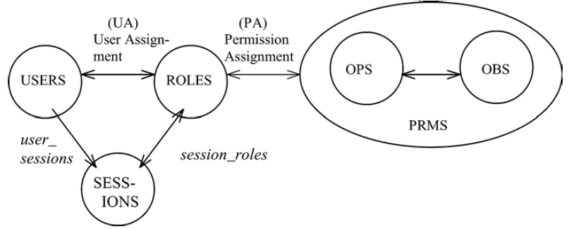

Role-based access control (RBAC) is an approach to restrict system access to unauthorized users. RBAC is sometimes referred to as role-based security. Within an organization, roles are created for various job functions. The permissions to perform certain operations are assigned to specific roles. Members of staff (or other system users) are assigned particular roles, and through those role assignments acquire the permissions to perform particular computer-system functions. Since users are not assigned permissions directly, but only acquire them through their role (or roles), management of individual user rights becomes a matter of simply assigning appropriate roles to the user's account; this simplifies common operations, such as adding a user, or changing a user's department. Core RBACThe RBAC model as a whole is fundamentally defined in terms of individual users being assigned to roles and permissions being assigned to roles.  A user is defined as a human being. Although the concept of a user can be extended to include machines, networks, or intelligent autonomous agents, the definition is limited to a person in this document for simplicity reasons. A role is a job function within the context of an organization with some associated semantics regarding the authority and responsibility conferred on the user assigned to the role. Permission is an approval to perform an operation on one or more RBAC protected objects. An operation (OPS) is an executable image of a program, which upon invocation executes some function for the user. A session is a mapping of one user to possibly many roles, i.e., a user establishes a session during which the user activates some subset of roles that he or she is assigned.
References
|
| Backlinks | |
| GAM Users | Toc:GeneXus Access Manager (GAM) |